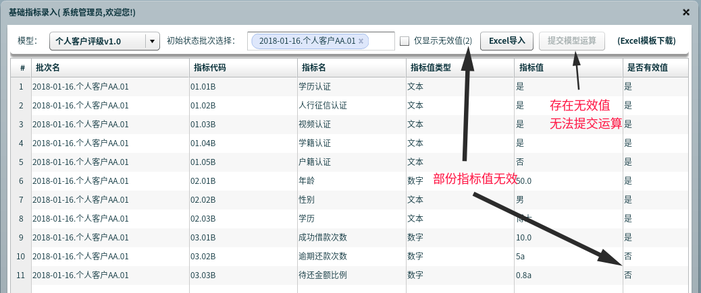
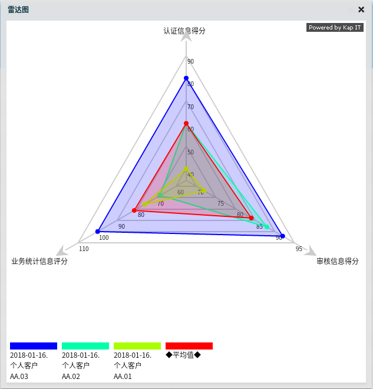

指标模型的概念
- 关键指标分析是一种常用的业务分析手段
- 指标可分为
基础指标和计算指标 基础指标是指当前业务系统能够直接获取的指标，比如客户评级模型中客户的年龄、学历、性别、总借款次数等等计算指标是指通过定义计算公式，从其它指标计算得出的指标，比如：性别得分这个指标的公式为如果 (${性别} == "女") 60分 否则 40分基本信息汇总得分这个指标的公式为${性别得分}×20% + ${年龄得分}×20% + ${学历得分}×60%客户评级最终得分这个指标的公式为${基本信息汇总得分}×30% + ${业务统计信息得分}×40% + ${征信信息得分}×30%
- 通过上面列举的计算公式可以看出，指标模型的指标之间存在非常复杂的多层依赖关系
性别得分依赖性别基本信息汇总得分依赖性别得分、年龄得分和学历得分客户评级最终得分依赖基本信息汇总得分、业务统计信息得分、和征信信息得分
- 所以，某一业务领域的
指标模型包含该业务领域设定的关键指标以及它们之间的计算关系。
文章后半段有系统演示，先聊聊概念和意义
建立指标模型的意义
- 首先当然是满足当前的指标定义、计算、分析、展现需求（虽然普通的报表系统也能实现指标统计，但指标模型的真正价值在于对持续优化过程的支持和促进）
- 业务人员对指标的多层计算过程有了一个全面的了解
- 指标的计算公式能对应需求的具体细节，业务需求不再需要文档来维护，可以直接配置到系统上（解决需求文档和代码脱节的问题）
- 用领域专用语言（DSL）定义计算公式，普通业务人员也能很好的理解，可以自行维护
- 通过以上几点，业务人员对需求可进行较好的把控，有利于指标模型的逐步优化完善
- 通过指标模型的不断演进，模型所对应的业务领域的分析维度逐步清晰，再加上历史数据的积累，这时再以这些指标为基础，去做大数据分析、机器学习就水到渠成了
- 《三体》的“维度攻击”是近期非常热门的一个概念，新维度的发现需要数据的积累和一个不断试错的过程，而如何让业务、技术人员有目标性的去寻找新的维度，建立逻辑清晰、易配置、可扩展的指标模型是非常必要的手段。
一个指标不一定就是一个有重要意义的维度，但不去建立指标模型、不去测试指标数据，那永远也找不到新的维度。比如假设一批借款数据，其中女性借款人的不良率是0.5%，男性是1.2%，差距非常大；如果没有建立包含
性别这个指标的指标模型，就不会想到用指标的思维来分析数据；而更进一步，可能性别+学历、性别+年龄+学历组合计算之后，会有一个更加重要的维度出现，如果不先建立指标模型，这些都难以发现。
缺少传统业务分析积累、缺少业务人员的深度参与、无演进过程的大数据分析系统都将只是花架子。
系统功能模块：指标模型定义
- 指标模型管理
- 指标管理（一个模型包括多个指标，指标的依赖限定于同一模型内）
- 指标计算公式的维护
- 解析指标计算公式的变量（支持普通、通配符、正则表达式变量），建立指标的依赖关系
- 指标值、公式的有效性检查
- 指标依赖死循环的检查
- 报表定义（每张报表包含多个指标，满足多业务场景的分析需求）
系统功能模块：指标模型运算
- 运算对象管理（不同模型有不同类型的运算对象，如
客户评级模型是客户、股票分析模型是股票、软件代码质量评价模型就是程序员） - 运算批次发起（选择运算对象，发起一次指标运算批次）
- 基础指标录入，录入方式包括：
- 自动导入 - 系统建设完善、基础指标可从已有业务系统、第三方接口抽取
- 手工导入 - 无完善信息系统，目前只能通过较人工的方式零散的拿到数据，先手工合并到excel表格，再进行批量导入
- 直接录入 - 适合基础指标较少的模型，在系统界面逐个录入
- 基础指标录入值完整性、有效性检查
- 以上检查通过后，可发起模型运算
- 运算完成，得到所有
计算指标结果
系统功能模块：结果展现
指标关系图，把单个运算对象的所有指标计算结果和多层依赖关系通过关系图的方式展示出来，非常直观的分析了计算过程和结果模型报表，根据模型定义中设置的报表，集中展示多个运算对象的运算结果，或单个运算对象的多次运算结果指标对比雷达图，用雷达图同时展示多个运算批次的报表指标值，可针对多对象多批次和单对象多批次的对比分析
系统演示：整体功能菜单
下有大量图片，PC端查看效果更佳
系统演示：指标模型定义
指标模型管理
- 新增 - 增加一个指标模型
- 克隆 - 复制一个模型及其所有指标，这样可以支持模型的多版本管理，平滑升级
- 修改 - 修改模型名称和说明
- 删除选中 - 删除所选模型及其所有指标，以及所有运算批次数据
指标配置 - 基础指标
- 基础指标是指需要外部导入、录入的原始业务数据
- 测试值，是用来检查指标计算关系配置是否准确用的
例如这两个指标：
户籍认证，户籍认证得分（计算公式为：${户籍认证} == '是' ? 100 : 0）；如果户籍认证的测试值设置的是否，那么户籍认证得分的测试必须设置为0，和计算公式的结果一致 - 通过配置
测试值，可以检查整个指标模型的配置是否正确，所以后面会有检查测试值这个功能
指标配置 - 计算指标
- 计算公式通过变量来依赖其它指标（变量分为普通、通配符、正则表达式3种，
下图1为普通变量，图2为通配符变量）
指标值、公式的有效性检查
- 检查测试值 - 全部通过，所有公式配置无误，所有测试值都跟计算结果匹配
- 检查测试值 - 部份测试值跟计算结果不匹配
- 检查测试值 -
认证信息得分公式配置错误导致计算出错，同时导致所有直接、间接依赖它的指标也无法计算
指标依赖死循环的检查
- 正确的依赖关系是这样的：
客户评级结果依赖审核信息得分依赖年龄得分，年龄得分只依赖年龄这个基础指标
- 为了测试死循环，让
年龄得分依赖客户评级结果
- 检查测试值 - 提示死循环依赖
报表定义
- 系统支持自定义报表
- 根据不同业务视角，可选取部份指标组合成一个报表，进行更有针对性的分析
- 一个指标对应一个报表列，并支持排序
系统演示：指标模型运算
运算对象管理、运算批次发起
- 先通过右键菜单进行“运算对象”的增删改查操作
- 然后选择要“发起运算”的对象，可多选
- 再通过右上角的下拉列表选择运算模型
- 最后点击“发起运算”按钮进行发起。（如图所示，“个人客户AA、BB、CC”将同时发起“个人客户评级v1.0”模型运算）
- 同一个“运算对象”可以多次发起运算，得到不同时间点的运算结果，并可以对不同时间点的运行结果进行比较，更加深入的分析单个对象的数据变化过程
基础指标录入
- 导入步骤
- Excel模板演示（每个模型有对应的模板，并且会根据模型指标配置自动生成，不需要单独维护模板）
- 导入完成，所有指标值有效，可提交运算，提交后系统后台将启动任务，进行所有计算指标的计算
- 导入完成，部份指标值无效，需完善后才能提交运算

运算状态监控
发起，为初始状态，导入基础指标之后可提交模型运算运算中，系统后台计算任务正在运行成功，模型计算完成，可以查看结果作废，取消的运算批次
系统功能模块：结果展现
指标关系图
模型报表
业务统计指标报表配置回顾

业务统计指标报表将实时对应报表定义的配置
关键指标报表
指标对比雷达图
多个运算对象的指标数据对比
业务统计指标报表的雷达图
关键指标报表的雷达图
单个运算对象的多次运算数据对比
可用于分析同一个
运算对象在不同业务范围的数据，比如可对一个程序员在项目A、项目B、项目C的代码质量进行比较分析
- 报表
- 雷达图

附录
指标计算公式中的变量类型
普通变量
- 说明：对单个指标的值进行引用
- 格式：
${<指标名>} - 样例：
${下单金额}
通配符变量
- 说明：通过
通配符匹配指标名 - 格式：
${xxx*xxx??xxx}，其中*代表任意多个字符，?代表任意单个字符 - 样例1：
${*得分}代表以得分结尾的所有指标 - 样例2：
${??金额}代表总共4字，以金额结尾的指标
正则表达式变量
- 说明：通过
正则表达式匹配指标名 - 格式：
#{<表达式>} - 样例：
#{0[1-6]月金额}匹配01月金额～06月金额六个指标 - 备注：需要具备正则表达式知识，可由技术人员协助配置。（正则表达式参考）
部分DSL方法
以下为当前实现的部份DSL方法，系统支持DSL方法的扩展，可根据不同业务领域的特殊要求进行定制
百分比汇总
- 功能说明：多个指标根据百分比加权求和
- 参数：一组包含值(value)和占比(percentage)的列表
- 返回：数值
- 样例
1
2
3
4
5
6
7
8
9
10/**
* 按百分比汇总
* <p>例如 指标A = 百分比汇总([[${指标1}, 20], [${指标2}, 80]])
* <p>表示 指标A由指标1和指标2，其中指标1占比20%，指标2占比80%
* <p>相当于 指标A = 指标1 * 20% + 指标2 * 80%
* <p>需注意：传入的参数列表中，所有的占比(percentage)相加需等于100，否则计算出错没有结果
*
* @param valueList 参数1，一组包含值(value)和占比(percentage)的列表
* @return 汇总后的值
*/
条件匹配
- 功能说明：在匹配项列表找到匹配项，返回对应值
- 参数：（输入Map，匹配项列表）
- 返回：任意值
- 样例
1
2
3
4
5
6
7
8
9
10
11/**
* 根据输入项和条件进行匹配，计算结果
* @param inputMap 输入项，如：v1:${金额}, v2: ${数量}*
* @param expList 匹配项列表，如：
* [['v1 <= 50', 40],
* ['v1 > 50 && v1 <= 150', 60],
* ['v1 > 150 && v1 <= 300', 80],
* ['v1 > 300 && v2 <=100', 90],
* ['v1 > 300 && v2 > 100', 100]]
* @return 匹配结果，如果都不匹配返回为空
*/
平均值
- 功能说明：计算一组数值的平均值
- 参数：指标列表
- 返回：数值
- 样例：
平均值([${*得分}]),代表以“得分”结尾的所有指标的平均值
最小值
- 功能说明：查找一组数值的最小值
- 参数：指标列表
- 返回：数值
- 样例：
最小值([${*得分}])
最大值
- 功能说明：查找一组数值的最大值
- 参数：指标列表
- 返回：数值
- 样例：
最大值([${*得分}])
总和
- 功能说明：计算一组数值的和
- 参数：指标列表
- 返回：数值
- 样例：
总和([${*得分}])
标准差
- 功能说明：计算一组数值的标准差
- 参数：指标列表
- 返回：数值
- 样例：
标准差([${指标1},${指标2},${下单??}])
匹配左闭区间
- 功能说明：找到传入值对应的区间（区间类型为右开左闭），返回对应值
- 参数：匹配值，匹配区间列表
- 返回：任意值
- 样例
1
2
3
4
5匹配左闭区间(${年龄},
[[null, 20, 0],
[20, 40, 80],
[40, 60, 100],
[60, null, 60]])
匹配右闭区间
- 功能说明：找到传入值对应的区间（区间类型为右闭左开），返回对应值
- 参数：匹配值，匹配区间列表
- 返回：任意值
- 样例：参考
匹配左闭区间
匹配闭区间
- 功能说明：找到传入值对应的区间（区间类型为右左都闭），返回对应值
- 参数：匹配值，匹配区间列表
- 返回：任意值
- 样例：参考
匹配左闭区间
匹配开区间
- 功能说明：找到传入值对应的区间（区间类型为右左都开），返回对应值
- 参数：匹配值，匹配区间列表
- 返回：任意值
- 样例：参考
匹配左闭区间